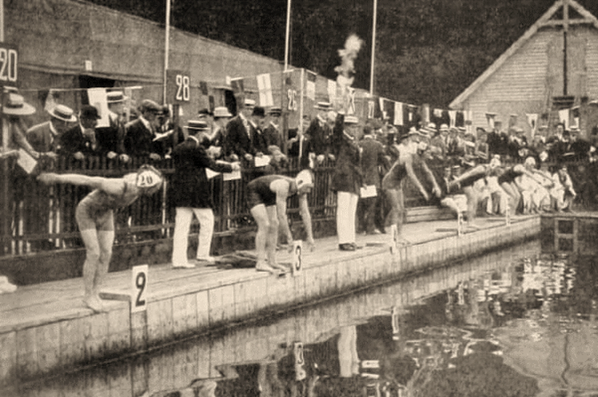

La natación es un deporte que consiste en el desplazamiento de una persona en el agua, sin que esta toque el suelo. Es regulado por la Federación Internacional de Natación

La natación nace como deporte a principios del siglo XIX, en Gran Bretaña. La Sociedad Nacional de Natación de Londres (National Swimming Society of London), se fundó en el año 1837. Se organizaban multitud de competiciones de natación.
En el año 1869, encontramos el primer campeón del mundo de natación, que es Tom Morris, ganado una carrera de una milla (1.600 metros) disputada en el río Támesis. Tuvo mucha aceptación y pronto este deporte se expandió por todo el mundo.
En el último tercio del siglo XIX, la natación de competición en varios países europeos ya contaba con su propia federación. También, se establece con éxito en Nueva Zelanda y Australia.
A pesar de que en la antigua Grecia la natación ya se practicaba, hecho que quedó reflejado en escritos como la Iliada o La Odisea, además de en multitud de utensilios de barro, este deporte nunca formó parte de los Juegos Olímpicos antiguos. Sin embargo, la natación sí estuvo presente en los primero Juegos modernos de Atenas de 1896 y desde entonces siempre ha estado incluida en el programa olímpico.
